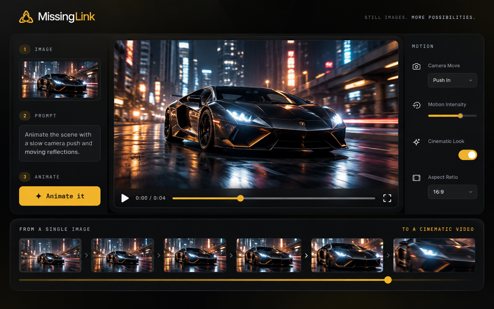
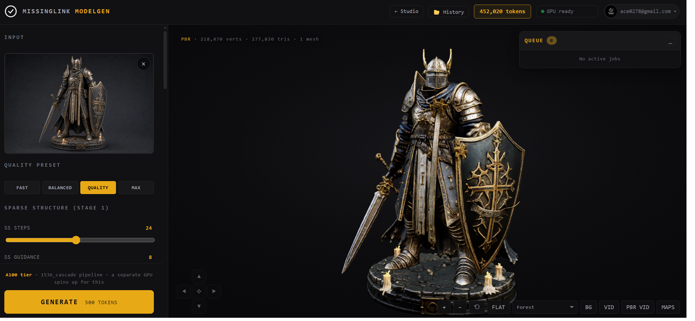
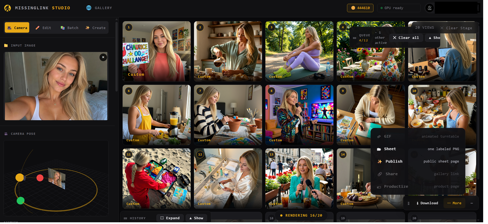

Start with one image.
Take it everywhere.
Edit it with plain English. Reshoot the same subject from new angles. Change twenty images at once. Animate it. Turn it into 3D. MissingLink keeps the idea moving instead of making you start over in another tool.

One good starting point can become the whole project.
The product gets more useful after the first generation. Keep the character, product, scene, or idea you already like and push it into the next deliverable.

Create or upload
Begin with a sentence, a reference, or an image you already have.

Direct the change
Describe the end state. Keep everything you did not ask to change.
Move the camera
Generate new viewpoints while holding onto the same subject.

Animate it
Use the still you already made as the starting frame for motion.

Make it 3D
Turn a clean reference into a textured model you can take elsewhere.
Don’t regenerate the subject. Move the camera.
Upload one image and orbit around it. MissingLink creates new viewpoints from the original source so your character or product has a better chance of staying recognizably the same thing.
- Generate one angle, six views, or a twenty-view set.
- Control azimuth, elevation, distance, and per-view prompts.
- Use it for character turnarounds, product coverage, references, and 3D prep.
One direction. Up to twenty images.
A creative tool becomes a production tool when the same decision can move through a whole set. Load your images, write the change once, and let MissingLink adapt the instruction to each frame.
- Apply one instruction across a selected image set.
- Upscale, audit consistency, and retry individual failures.
- Useful for product catalogs, character sets, campaign variants, and LoRA prep.

Different creators. Same problem: the first image is never the last asset.
MissingLink is most useful when you already know what you like and need to turn it into a coherent set of things you can actually use.
Products & ecommerce
Take one clean product shot into backgrounds, alternate views, catalog variants, enhancements, and short motion.
BUILD A PRODUCT SET →Characters & games
Keep a character moving through turnarounds, new scenes, sequences, animation references, panoramas, and 3D.
BUILD A CHARACTER SET →Creative & campaigns
Start with the concept that won, then iterate the format instead of re-solving the idea in disconnected apps.
BUILD THE CAMPAIGN →The value is what happens after “generate.”
There are plenty of places to make a first image. MissingLink is designed around the less glamorous—and much more useful—part: keeping that image alive while the work expands.
Explore all tools →There’s a deeper tool behind every screenshot.
Sequences, panoramas, upscaling, face transfer, LoRAs, web references, and the agent are already in the product. The Learn page shows the exact workflows when you’re ready for them.
Make one thing you like.
Then keep going.
Start with 50 standard image edits. No installation, no separate GPU account, and nothing becomes public unless you choose to share it.